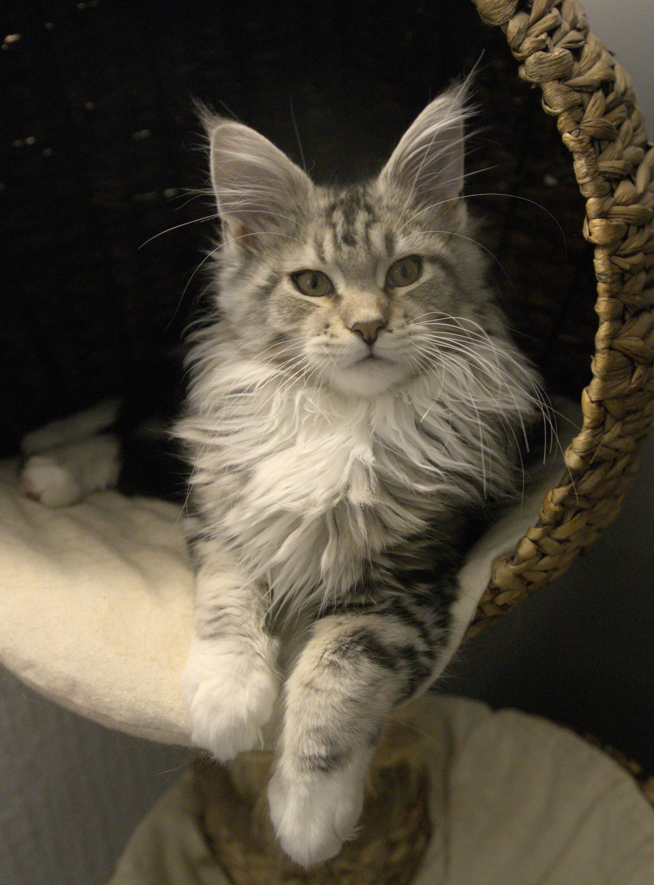

Maine Coon

Photo by Philip Auld on Unsplash
History
The Maine Coon is one of the largest domesticated cat breeds. They are believed to have originated in the state of Maine, USA, and were likely developed from a mix of long-haired cats brought by European settlers and local shorthaired cats. The breed gained popularity in the 1960s and 1970s, and was officially recognized by The International Cat Association in 1975 and by the Cat Fanciers' Association in 1983.
Appearance and Temperament
The Maine Coon is a large, robust cat with a distinctive tufted ears and a bushy tail. They have a thick, water-repellent coat that is dense and long. Maine Coons are known for their friendly, gentle nature and are often described as "dog-like" in their behavior. They are intelligent and can be trained to perform tricks.
Source: https://cats.com/cat-breeds/maine-coon
Back to previous page